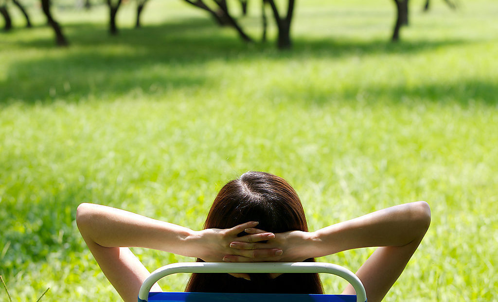

The lifestyle in Beijing is quite slow. Beijing people prefer to take their time and live in a slower pace life. They believe It¡¯s better to enjoy the life other than always in a hurry.The life of most ¡°Old Beijing¡± is simple, walk a bird after lunch, go to the opera and teahouse when bored.
In Beijing, sometimes you can see some old people doing a kind of sports in the park. It looks like Kongfu but they are moving slowly. Sometimes they do it alone but sometimes they do it together. The sports they do is called Tai Chi which is a genre of Kong Fu. Most old Beijing people like to practice Tai Chi in the morning because they believe it is good for their health and let them have longer life.